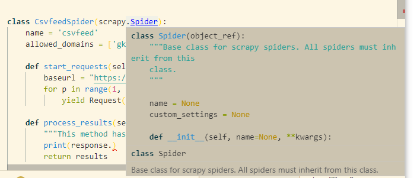

首先，使用 scrapy startproject <project_name> <project_path> 建立一个爬虫.
> scrapy startproject eol eol
New Scrapy project 'eol', using template directory 'c:\users\dexfire\appdata\local\programs\python\python37\lib\site-packages\scrapy\templates\project', created in:
D:\CreatingSpace\VSCode\Python36\eol.cn\eol
You can start your first spider with:
cd eol
scrapy genspider example example.com
然后我们建立一个 CSVFeed 爬虫，因为集成了数据处理部分，方便提取和储存。
scrapy genspider csvfeed gkcx.eol.cn
> scrapy genspider csvfeed gkcx.eol.cn
Created spider 'csvfeed' using template 'basic' in module:
eol.spiders.csvfeed
然后我们看到这样一段初始代码：
class CsvfeedSpider(scrapy.Spider):
name = 'csvfeed'
allowed_domains = ['gkcx.eol.cn']
start_url = ['http://gkcx.eol.cn']
def parse(self, response):
pass
这段代码非常简洁，简洁得有些离谱，这个…就是爬虫的本体？
事实上呢，这里只是暴露在外的部分， scrapy 本身就是一个爬虫可能用到的所有辅助util工具的一个集合，因此需要用户输入很少的关键配置信息即可快速生成一个相关的爬虫，正是运用的这种逻辑。那么，深层的代码到底怎样运作的呢？
做编码工作，不一定要能自己编写一个完整框架，不过除了要灵活掌握框架用法以外，还一定要清楚的，就是这个框架的底层实现机制，要有个大致脉络，否则无论编码和调试都很容易卡壳的。
那么，我们开始，对 scrapy 进行抽丝剥茧，看看这只肥得流油的小宝贝肚子里到底装了些什么呢？

首先直观来看，这里似乎”定义”了几个变量，name allowed_domains start_url 却并没有对其进行任何操作，这显然是不合理的，事实上，这里的几个变量，都是其父类的成员变量，所以一定有方法对这几个变量进行了调用的。
首先我们打开第一个底层类，也即是我们所有spider的祖总类，scrapy.Spider，
class Spider(object_ref):
"""Base class for scrapy spiders. All spiders must inherit from this
class.
"""
name = None
custom_settings = None
def __init__(self, name=None, **kwargs):
if name is not None:
self.name = name
elif not getattr(self, 'name', None):
raise ValueError("%s must have a name" % type(self).__name__)
self.__dict__.update(kwargs)
if not hasattr(self, 'start_urls'):
self.start_urls = []
@property
def logger(self):
logger = logging.getLogger(self.name)
return logging.LoggerAdapter(logger, {'spider': self})
def log(self, message, level=logging.DEBUG, **kw):
"""Log the given message at the given log level
This helper wraps a log call to the logger within the spider, but you
can use it directly (e.g. Spider.logger.info('msg')) or use any other
Python logger too.
"""
self.logger.log(level, message, **kw)
@classmethod
def from_crawler(cls, crawler, *args, **kwargs):
spider = cls(*args, **kwargs)
spider._set_crawler(crawler)
return spider
def _set_crawler(self, crawler):
self.crawler = crawler
self.settings = crawler.settings
crawler.signals.connect(self.close, signals.spider_closed)
def start_requests(self):
cls = self.__class__
if method_is_overridden(cls, Spider, 'make_requests_from_url'):
warnings.warn(
"Spider.make_requests_from_url method is deprecated; it "
"won't be called in future Scrapy releases. Please "
"override Spider.start_requests method instead (see %s.%s)." % (
cls.__module__, cls.__name__
),
)
for url in self.start_urls:
yield self.make_requests_from_url(url)
else:
for url in self.start_urls:
yield Request(url, dont_filter=True)
def make_requests_from_url(self, url):
""" This method is deprecated. """
return Request(url, dont_filter=True)
def parse(self, response):
raise NotImplementedError('{}.parse callback is not defined'.format(self.__class__.__name__))
@classmethod
def update_settings(cls, settings):
settings.setdict(cls.custom_settings or {}, priority='spider')
@classmethod
def handles_request(cls, request):
return url_is_from_spider(request.url, cls)
@staticmethod
def close(spider, reason):
closed = getattr(spider, 'closed', None)
if callable(closed):
return closed(reason)
def __str__(self):
return "<%s %r at 0x%0x>" % (type(self).__name__, self.name, id(self))
我们发现，其内部是这样的，定义了多个函数
__init__loggerlogfrom_crawlerstart_requestsmake_requests_from_urlparse_set_crawlerupdate_settingshandles_requestclose__str__而实际我们默认的爬虫中，只覆盖实现了 parse 方法，也就是说，其他的所有方法均采取默认方式。
从这里的名字我们可以看到，scrapy 在运行爬虫的时候，首先使用__init__初始化爬虫，然后调用某些方法，例如start_requests获取起始请求，并进一步在handle request的过程中传递新的url给系统，从而开始调用下一层次的爬取工作。
下一步我们关心的是，我们究竟怎样发起第一个请求呢？事实上，根据官方文档，起始方式有“两种”，起始呢，本质上也都是一种：调用start_requests函数，返回一个Request对象，那么这个request对象又包含哪些参数呢？我们跟着摸摸底：
官网参考文档：scrapy: request-response
文件名：Python37\Lib\site-packages\scrapy\http\__init__.py
from scrapy.http.headers import Headers
from scrapy.http.request import Request
from scrapy.http.request.form import FormRequest
from scrapy.http.request.rpc import XmlRpcRequest
from scrapy.http.request.json_request import JsonRequest
from scrapy.http.response import Response
from scrapy.http.response.html import HtmlResponse
from scrapy.http.response.xml import XmlResponse
from scrapy.http.response.text import TextResponse
事实上，这个 scrapy.http.Request 仅仅是一个封装类，其底层是引用了多个子类，包括多种Request类，以及多种Response类。
这里，由于我们使用的是 Json 文件请求，所以同样也采用 JsonRequest 和 JsonResponse 来构造我们的请求：